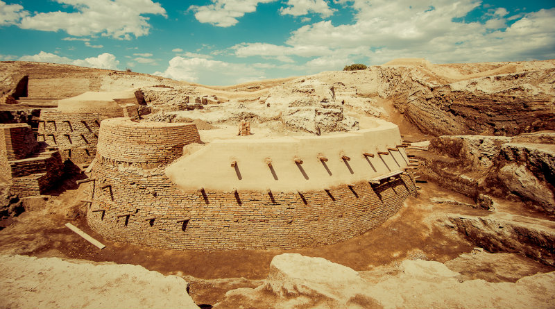
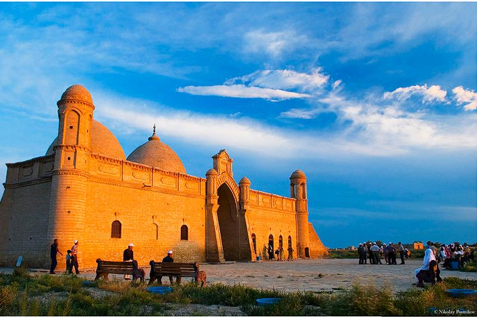
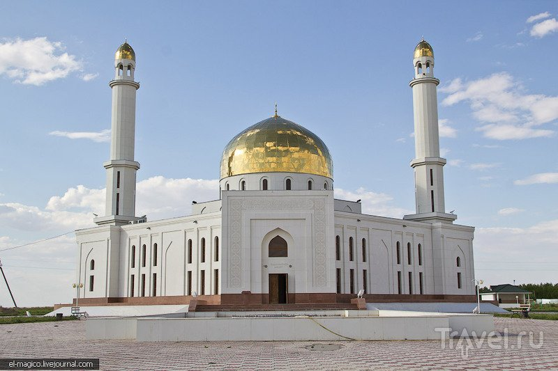

Otyrar is one of the largest cities in Central Asia
Otyrar - before the Mongol invasion, a settlement in the Otyrar district of the Turkestan region of Kazakhstan. It is located in the lower reaches of the Arys River at its confluence with the Syr Darya, 10 km west of the Timur railway station, near the modern village of Kogam, 57 km south of the city of Turkestan, 120 km northwest of Shymkent.
-

According to historical data, after the ambassadors of Genghis Khan were executed here, in 1219 the city was besieged by Mongol troops led by the sons of Genghis Khan. The siege lasted 6 months.
-

According to legend, Arystanbab died and was buried in the vicinity of Otrar in the XII century. Probably, at the same time his mausoleum was built, about which there is no reliable information.
-

This new building was recently built. It looks very nice inside and outside. Preserved oriental culture